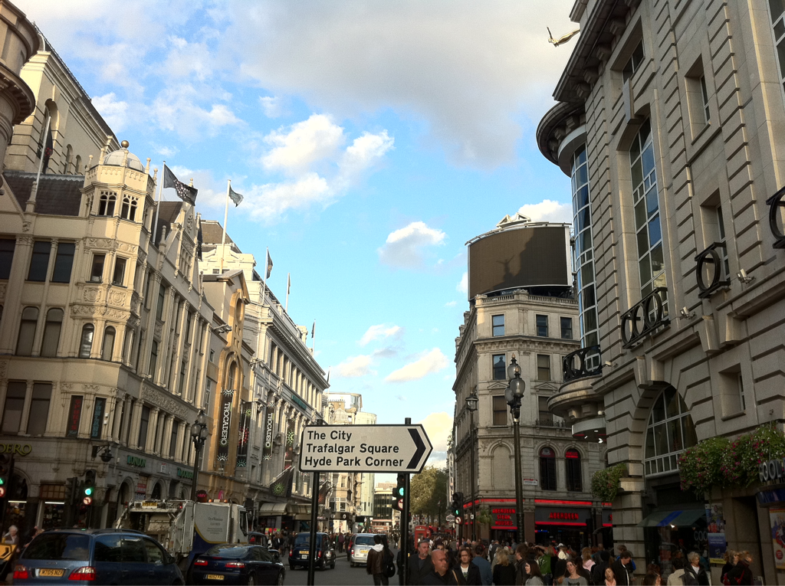

Thu, 06 Oct 2011 23:50:17 · london · england · travel
this is what london look like when its sunny and

This is what London look like when it’s sunny and gorgeous…
Thu, 06 Oct 2011 23:50:17 · london · england · travel

This is what London look like when it’s sunny and gorgeous…